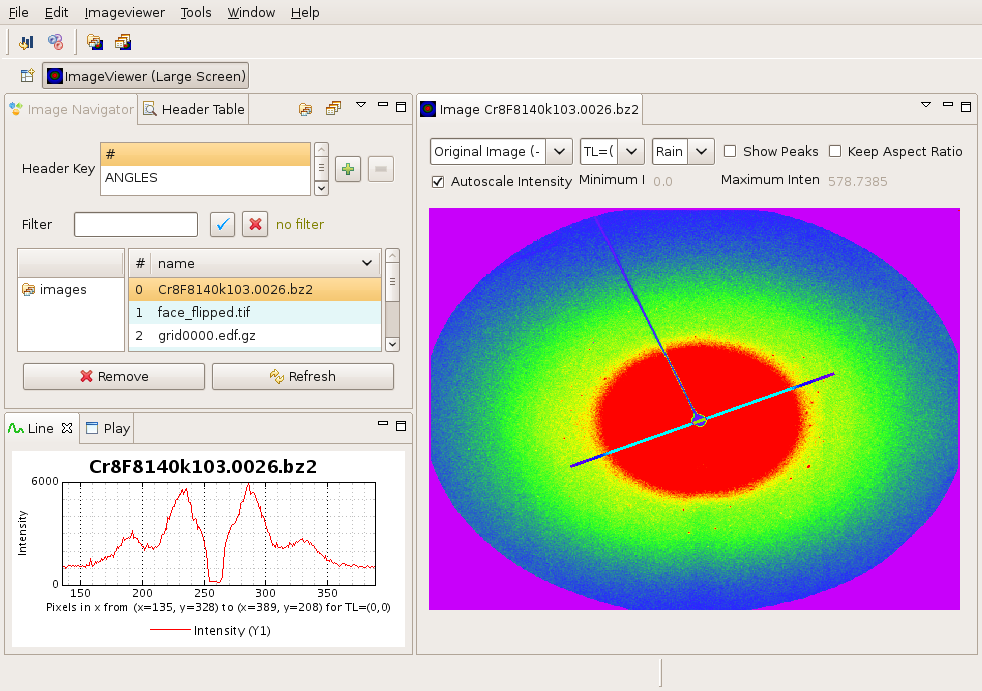

ImageViewer makes it easy to look at images and their metadata. This getting started guide will explain how to quickly get a workbench which looks like this :

We assume that you have downloaded the latest version of ImageViewer from the FABLE Sourceforge download site and unzipped it in a directory we will refer to as $IMAGEVIEWER_HOME from now on.
In the $IMAGEVIEWER_HOME directory you should find a script for your platform to start ImageViewer :
Windows – run_imageviewer.bat
Linux – run_imageviewer.sh
MacOSX – run_imageviewer.macosx
The script should find where ImageViewer is installed on its own. If not you must modify this script to make the IMAGEVIEWER_HOME variable be correct i.e. point to the directory where you unzipped ImageViewer.
You also need Java 1.6 or later installed on your system and
make sure it is in your PATH. You can download Java from here.
You can test the version of Java you have by opening a shell or command
line window and typing java -version. You should see something like this
:
goetz@eclipse:~ $ java -version
java version "1.6.0_11"
Java(TM) 2 Runtime Environment, Standard Edition (build 1.6.0_11-b03)
Java HotSpot(TM) Client VM (build 11.0-b16, mixed mode, sharing)
You must also install Python 2.5 and make sure it is in your
path. You can test this by opening a console window or shell and typing
python. You should see something like this :
goetz@eclipse:~ $ python
Python 2.5.1 (r251:54863, May 2 2007, 16:56:35)
[GCC 4.1.2 (Ubuntu 4.1.2-0ubuntu4)] on linux2
Type "help",
"copyright", "credits" or "license" for more
information.
>>>
Start ImageViewer by clicking on the batch file or running the shell script. You should see the standard ImageViewer startup splash screen and then the ImageViewer workbench window :
Now open the standard test images which are delivered with ImageViewer by clicking on File -> Open Directory and browse to :
$IMAGEVIEWER_HOME/plugins/fable.test.data_1.0.0/data/images
You should see the same screen as the one displayed at the beginning of this Getting Started. To get the colour lookup display go to the LUT combo box (2nd from left on the top of the image) and select colour.
If you have all the prerequisites installed everything should just work as described here, and you should see the top image. For more help see the next section on the User Interface.
If however you could not read the image or had another problem refer to the Troubleshooting section.